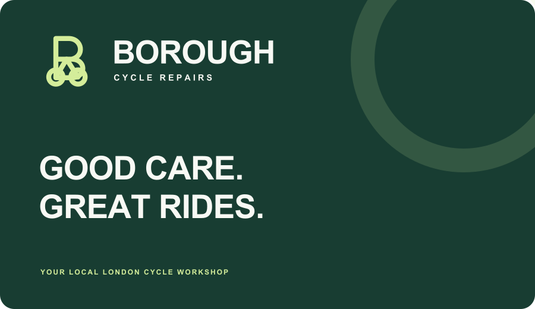
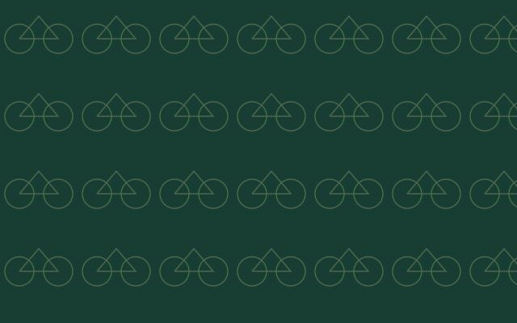

LONDON ROOTS. EVERYDAY ADVENTURES.
Uma marca feita
para seguir em frente.
Precisão de oficina. Proximidade de bairro. Uma identidade para quem acredita que cuidar da bicicleta é cuidar do próximo caminho.

01 / IDEIA CENTRAL
Um B. Duas rodas.
Muitos caminhos.
O cuidado está na construção.
O monograma combina a letra B de Borough, duas rodas e um quadro triangular. Traços arredondados equilibram a precisão mecânica com uma expressão próxima e acolhedora.
A assinatura “Good care. Great rides.” resume a promessa da marca: cuidado honesto para aproveitar melhor cada pedalada.
Proposta criativa original para este projeto. O símbolo não representa uma certificação ou um selo oficial.
02 / SISTEMA DE LOGO
Reconhecível em qualquer percurso.



02 — Reverso · baixar SVG ↗03 — Monocromático · baixar SVG ↗04 — Ícone digital · baixar SVG ↗

Os arquivos possuem letras convertidas em curvas: a marca não depende de fontes instaladas para manter sua aparência.
03 / PALETA
Urbana por natureza.
Use verde sobre papel e verde sobre lima para textos. Reserve o oliva para elementos de apoio e textos grandes. Não use lima como texto sobre fundo claro.
04 / TIPOGRAFIA E VOZ
Good care.
Great rides.
Manrope · 600–800
Títulos e chamadas com
presença, curvas suaves e espaçamento compacto.
DM Sans · 400–600
Texto, formulários e
informações de serviço. Priorize leitura confortável em telas
pequenas.
Fontes da interface disponíveis no Google Fonts sob licença SIL Open Font License. O logotipo é fornecido como desenho vetorial fixo; não o redigite.
Fale como uma boa oficina de bairro.
Direto, próximo e confiante. Explique o serviço sem jargão. Mostre o preço sem exageros. No site, use inglês britânico: “tyre”, “£” e nomes de serviço consistentes.
“Your bike. A little care.
A whole lot of good miles.”
Evite promessas de prazo, garantias, certificações ou serviços que a oficina não tenha confirmado.
05 / APLICAÇÕES
Da oficina à próxima aba.
GREAT RIDES.BOROUGH · LONDON

Grafismo de apoio para embalagens, peças digitais e materiais da oficina.O cartão é uma aplicação conceitual, sem telefone ou endereço inventados. Os SVGs são escaláveis e podem ser preparados para impressão; confirme cores e dimensões com a gráfica.
06 / REGRAS DE USO
Consistência também é cuidado.
Respiro e tamanho
Mantenha uma margem livre equivalente a ¼ da altura do símbolo em todos os lados. Use o logo completo a partir de 180 px de largura; abaixo disso, prefira o símbolo. Favicon a partir de 32 px.
Forma e contraste
Preserve a proporção. Não gire, estique, adicione sombras ou altere as letras. Use a versão reversa sobre verde escuro. Evite fundos fotográficos sem área sólida de proteção.